Same selected restaurant level, standard graphics, reduced motion, overview camera and 1440×1000 / 390×844 browser viewports for the five controlled pairs. These are actual Chromium renders using SwiftShader, not phone screenshots or GPU benchmarks. Read the audit and limits.
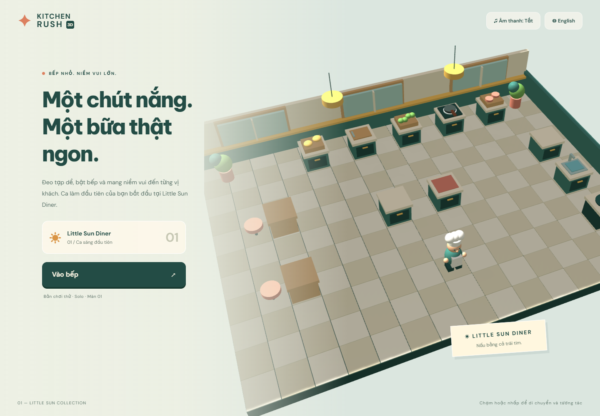
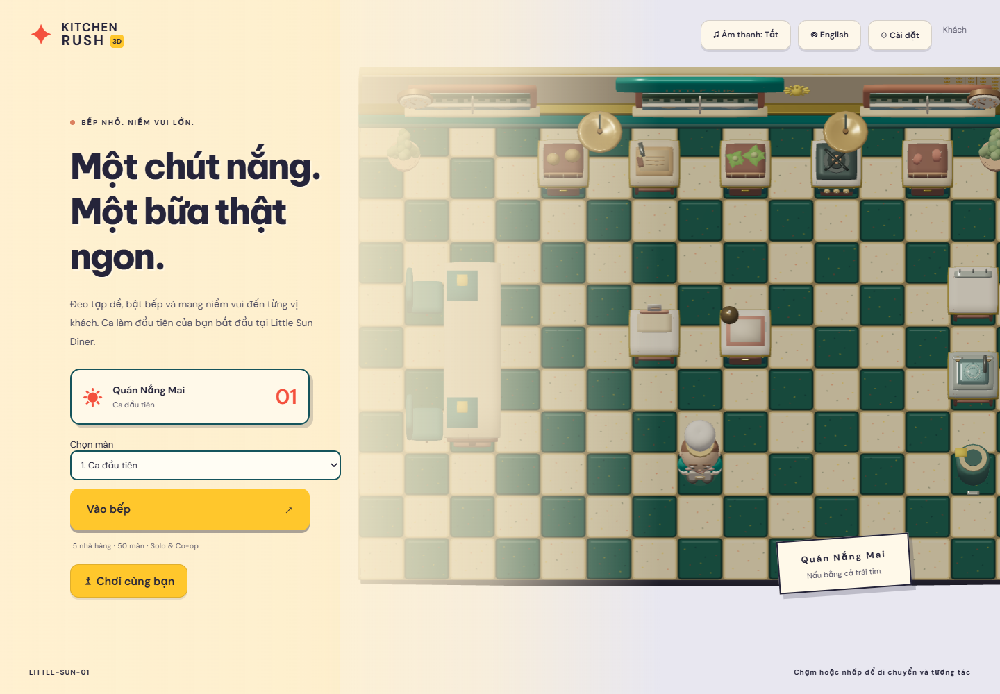
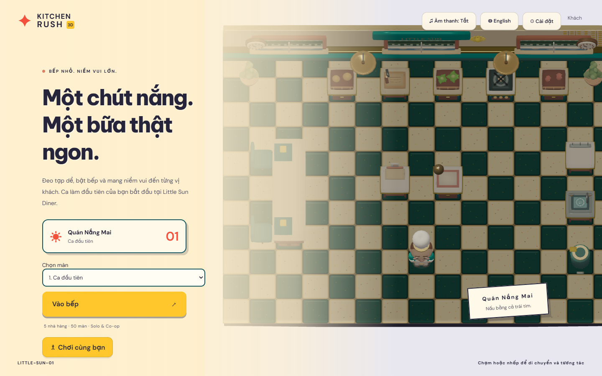
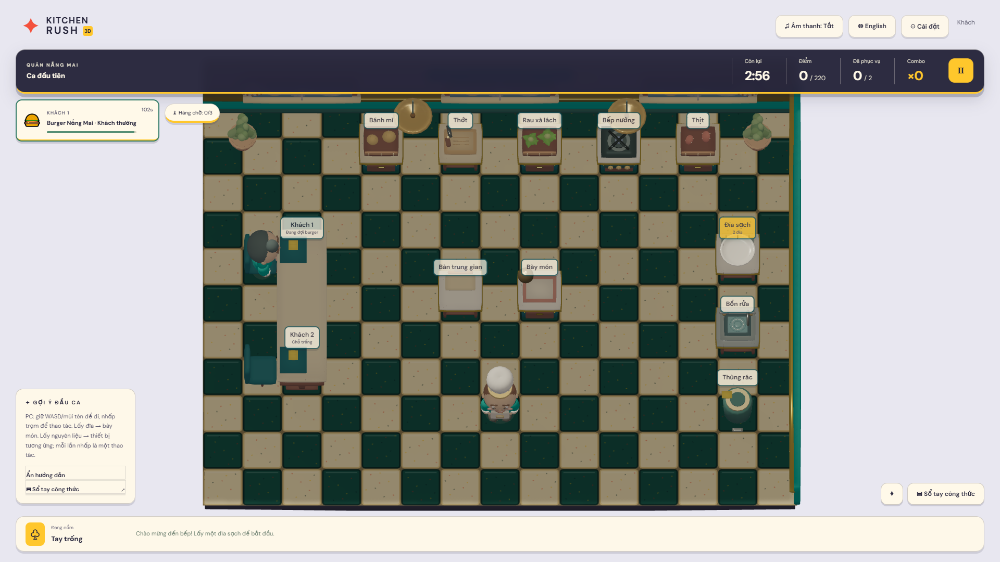
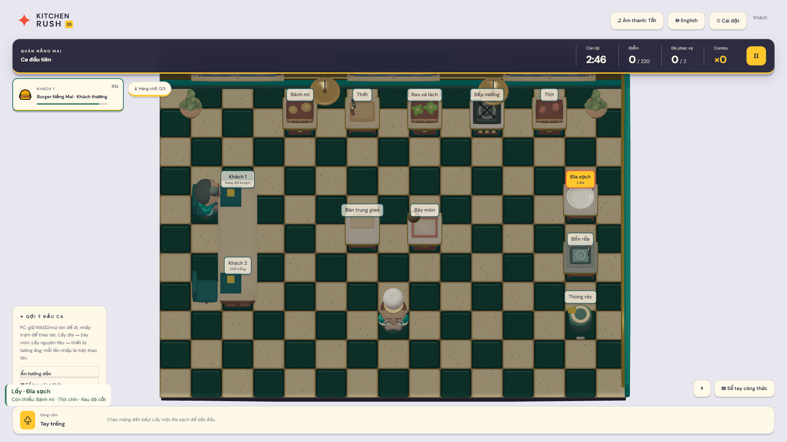
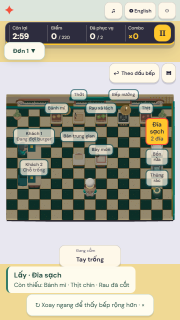
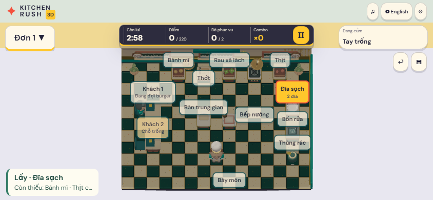
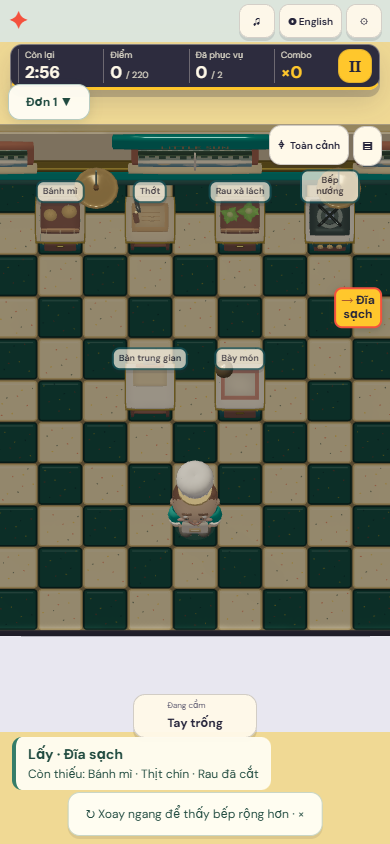
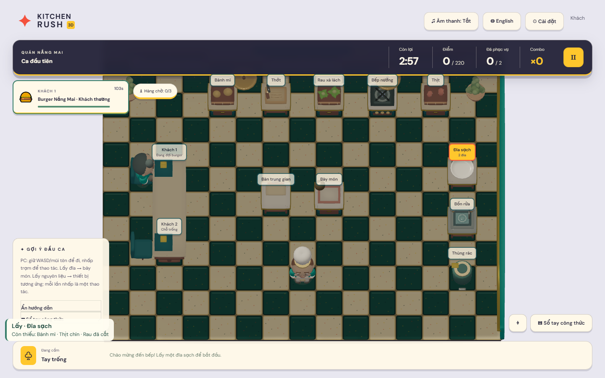
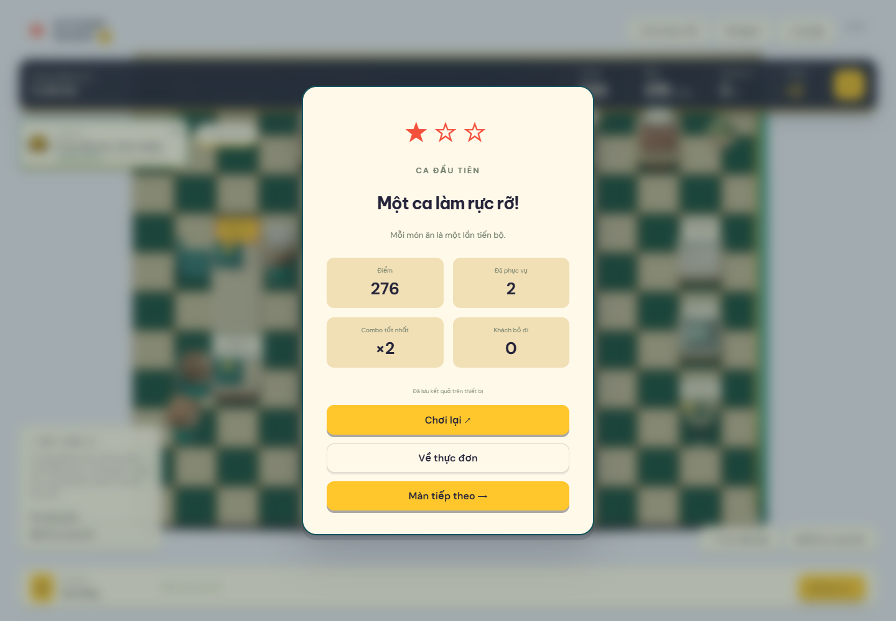
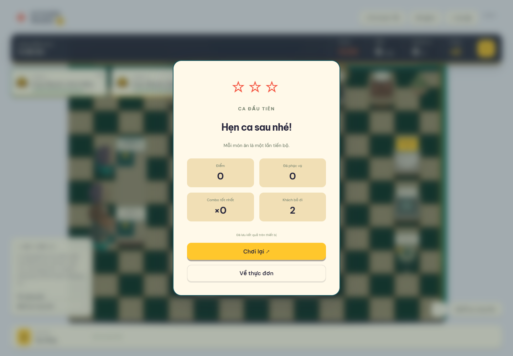
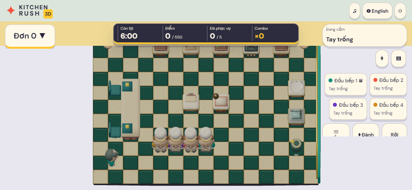